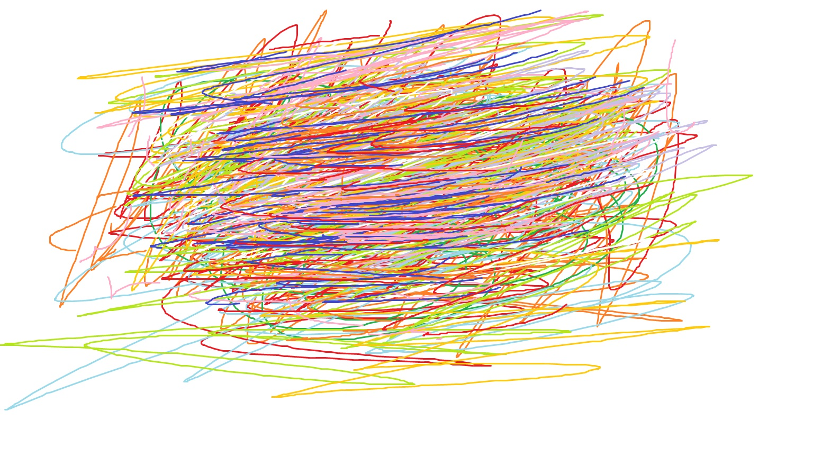

Featured Works

Emotion in Motion - A chaotic swirl of colours
For a more refined viewing experience, unmute here:
Note: Due to browser settings, audio may mute after navigating.
Explore the collection of works redefining artistic conventions.

Emotion in Motion - A chaotic swirl of colours